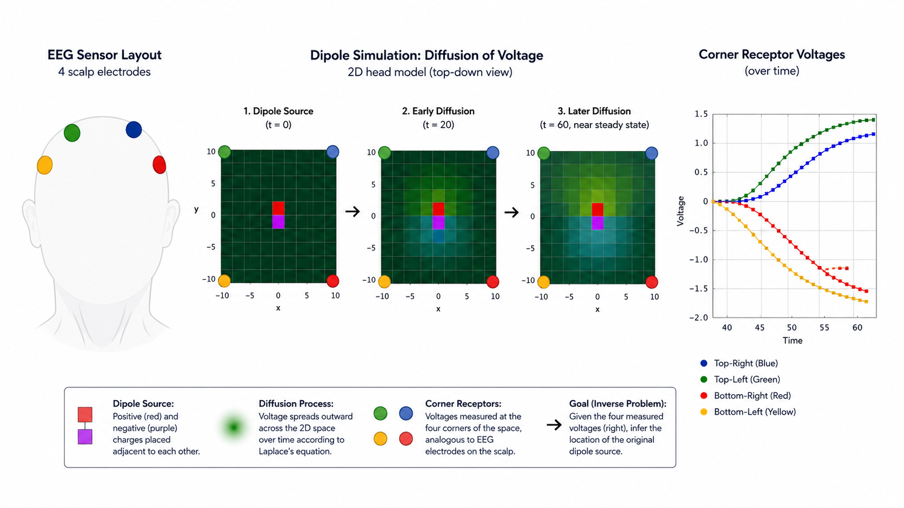

Imagine you're blindfolded in the woods and you hear a branch snap.
You know something happened. But what? Was it a deer? A squirrel? A person? How far away was it? Which direction did it come from?
The sound reaching your ears is only an observation. The underlying cause remains hidden. Worse, many different causes could produce nearly identical sounds — a deer twenty feet away might sound a lot like a person fifty feet away. The problem is fundamentally ambiguous.
This challenge shows up everywhere in science. We observe outputs and try to reconstruct the invisible processes that produced them. Doctors observe symptoms and infer disease. Astronomers observe light and infer the existence of distant planets. Neuroscientists observe electrical signals on the scalp and try to infer what's happening inside the brain.
That last one is known as the inverse EEG problem, and it's what my junior-year computational physics final project tried to chip away at.
The problem: scalp voltages, hidden sources
Electroencephalography (EEG) measures tiny voltage fluctuations from electrodes placed across the scalp. Those measurements are evidence that neural activity is happening somewhere inside the brain — synchronized firing of neuron populations creates dipole-like electric fields, which propagate through tissue and show up, faintly, at the surface.
The forward direction — source to signal — is governed by well-understood electrostatics. The reverse direction is the hard part. The inverse EEG problem is ill-posed: multiple internal source configurations can produce nearly identical scalp readings, so there's no clean algebraic way to invert it. It's the branch snap all over again, just with voltage instead of sound.
Simulating the forward problem first
Rather than starting with electrode readings and guessing at the source — the actual inverse problem — I approached it indirectly: simulate the forward problem first, on purpose, so I'd have ground truth to check against.
The setup leans on Laplace's equation, ∇²V = 0, which says the voltage at any point in a source-free region equals the average of its neighbors. Discretized onto a grid, that turns into Jacobi relaxation — repeatedly resetting each grid cell to the average of its four neighbors until the whole thing settles into equilibrium. It's the same diffusion logic 3Blue1Brown uses to explain the heat equation, just applied to electric potential instead of temperature.
I built this up in stages, inspired by a few Open Source Physics teaching apps (ElectricFieldApp, FieldLineApp, LaplaceApp):
- CornerElectrodes.java — a single +100V source at the center of a small grid, insulating boundary, four "electrodes" at the corners. Just a sanity check: does a central source actually produce different readings at different corners? It does — closer corners read higher voltage, and the gap between corners is the kind of signal an inverse method would need to exploit.
- EEGSimulatorApp.java — swapped the single source for a dipole (a +100V and a −100V charge placed adjacently), which is the actually-correct model: synchronized neural firing looks like a dipole, not a single point charge. Relaxing this grid produces the directional, asymmetric corner readings you'd expect from something with a polarity.
By this point I had a working forward model: place a dipole anywhere on the grid, relax it to equilibrium, read off four corner voltages. The question became — could I run that backward?
Where Monte Carlo comes in
There's no closed-form inverse here. The system is underdetermined — four electrode readings, infinite possible source positions. So instead of solving for the dipole analytically, I did what you do when the analytic path is closed: sample.
EEGSimulator2App.java placed 100 randomized dipole configurations on a 16×16 grid — a +100V/−100V pair, positioned adjacently, with the only constraint being that neither end could land on an edge or corner (where the electrodes live). For each of the 100 random placements, it relaxed the grid to equilibrium via the same Jacobi process, then recorded the four corner electrode voltages alongside the true dipole coordinates. That's the Monte Carlo move: brute-force the input space with random sampling, run the deterministic forward model on each draw, and build up an empirical dataset of (electrode reading → true source) pairs that no formula could hand you directly.
The output was a CSV — four voltages and four coordinates per row, 100 rows — and that dataset is what made the inverse problem tractable at all. Not by solving it, but by turning it into something a model could learn.
Backsolving with machine learning
With training data in hand, predictdipole.py trained a multi-output random forest regressor: four electrode voltages in, four dipole coordinates out. Think Battleship — given a handful of pings, guess where the ship actually is.
That's the real takeaway: with only four electrodes and a low-resolution grid, exact localization is out of reach, but the model wasn't guessing randomly either. Sparse data still encoded real spatial structure. Which tracks with how actual clinical EEG source localization works — it leans on dense electrode arrays, anatomical priors, and regularization to constrain an otherwise hopelessly underdetermined problem. Four corners on a toy grid is about as stripped-down as that problem gets, and it still wasn't nothing.
If you push on this — more electrodes, denser grids, anatomically informed priors, deep models instead of random forests — you start approaching something with real stakes: localizing epileptic foci, or decoding signal for brain-computer interfaces. Toy version, real shape.
Reflections
Still filling this in.
The short version: this is me posting an old project and relearning my own insights from it, as a way of pointing myself toward where my interests are now rather than just archiving where they used to be.
More soon.